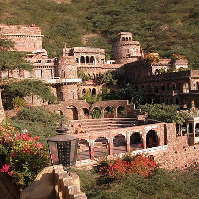
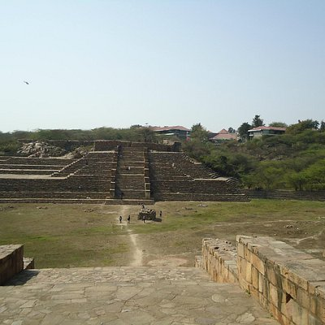
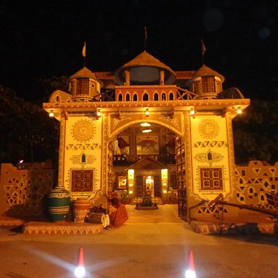
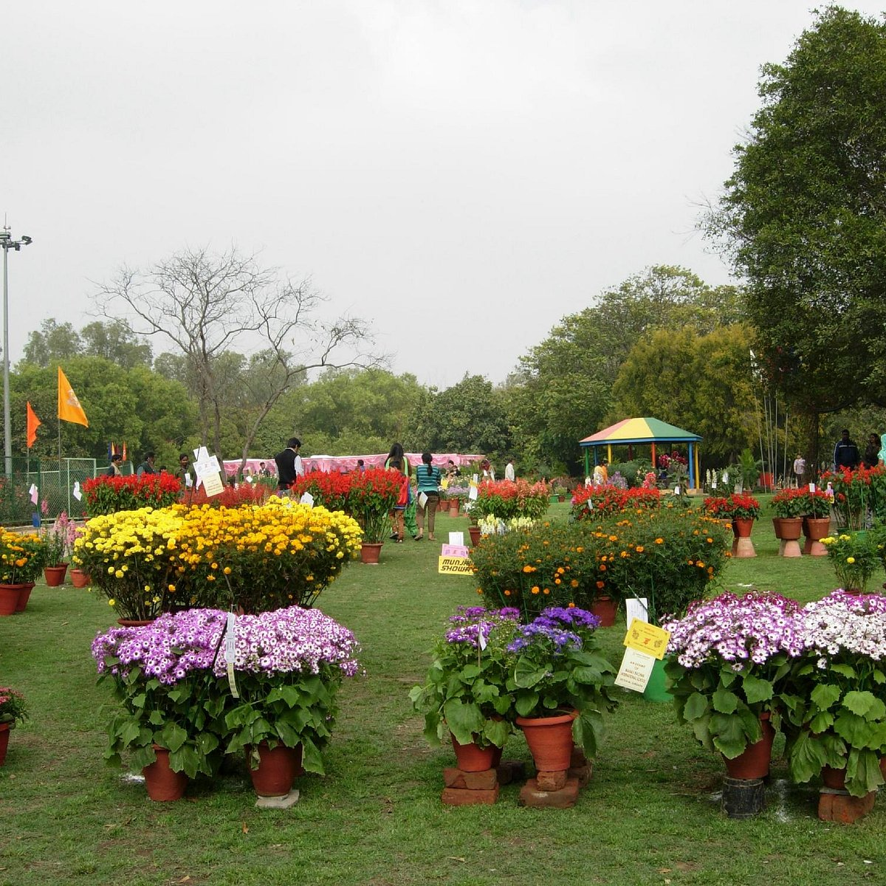
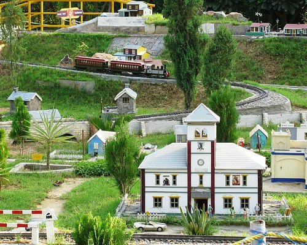
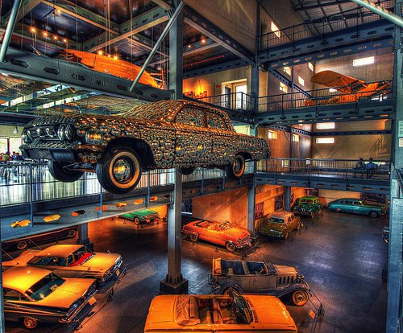
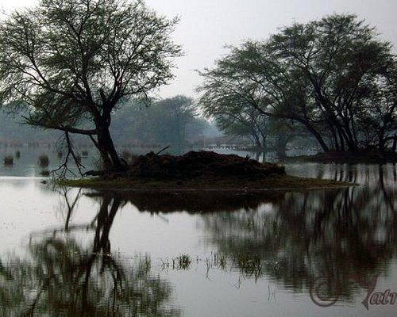

Popular cities in HARYANA

GURGAON
Haryana, India

FARIDABAD
Haryana, India

Kurukshetra
Haryana, India

Panchkula
Haryana, India

Haryana, India

Haryana, India
Haryana, India

Haryana, India

Best Time to Visit: October to November
For further informationvisit the site

Best Time to Visit: July to September
For further informationvisit the site

Best Time to Visit: ANY TIME(SAT&SUN)
For further information, visit the site

Best Time to Visit: ANYTIME
For further information, visit the site

Best Time to Visit: ANYT TIME (CLOSED ON TUESDAY)
For further information, visit the site